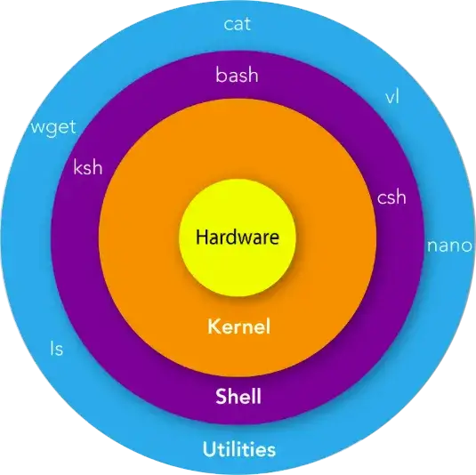
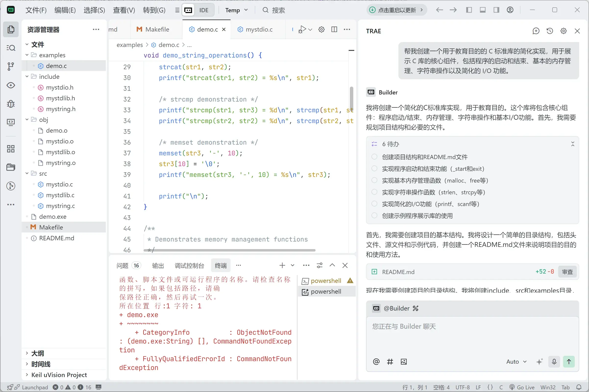

资源
正文
9 C 标准库和实现
libc（C standard library） 是 C 语言的标准函数库实现，为 C 程序提供最基础的功能，例如：
- 输入输出（
printf,scanf,fopen等）- 内存管理（
malloc,free）- 字符串处理（
strlen,strcpy等）- 数学函数（
sin,sqrt等）- 系统调用封装（
open,read,write等，非标准扩展）几乎所有的 C 程序在编译、运行时都需要链接一个 libc。
9.1 libc 简介
C 语言：世界上 “最通用” 的高级语言
- C 是一种 “高级汇编语言”
- 作为对比，C++ 更好用，但也更难移植
- 系统调用的一层 “浅封装”
{kind=link}

就算有系统调用，也没法编程啊
- 道理上可行，工程上不行
int read(int fd, void *buf, size_t count);
int write(int fd, const void *buf, size_t count);
int main() {
int a = ???; // 读入 a
int b = ???; // 读入 b
int sum = a + b;
// 输出 sum ???
}系统调用（syscall）确实是程序与操作系统交互的最底层接口。
比如
read()、write()、open()、close()等，都属于系统调用层面。但是——系统调用 ≠ 你能直接写出正常运行的 C 程序
语言机制上的运行库
- 大部分可以用 C 语言本身实现
- 少部分需要一些 “底层支持”
- 例子：体系结构相关的内联汇编
库也被标准化
- ISO IEC 标准的一部分
- POSIX C Library 的子集
- 稳定、可靠（不用担心升级版本会破坏实现）
- 极佳的移植性：包括你自己的操作系统！
因为 C 语言太广泛了，所以标准化组织（ISO/IEC）把 libc 也规范化了。
- ISO C 标准：定义了 C 标准库（如
stdio.h,stdlib.h,math.h等）- POSIX：定义了类 Unix 系统的通用接口（如
read,write,fork,exec等）
使用 Agent 工具实现：
帮我创建一个用于教育目的的 C 标准库的简化实现，用于展示 C 库的核心组件，包括程序的启动和结束、基本的内存管理、字符串操作以及简化的 I/O 功能。
{kind=link}

推荐以下几个轻量级 libc 实现，适合学习核心函数源码：
- musl-libc ✅ 代码简洁规范，模块化设计 ✅ 支持动态/静态链接，调试符号完整 ✅ 常用函数如
malloc,strlen实现清晰 使用：gcc -static -nostdlib -I musl/include -L musl/lib链接- dietlibc ✅ 极简设计（约 100KB） ✅ 适合嵌入式场景，POSIX 兼容 ✅ 提供
diet工具链简化编译 示例：diet gcc -o program program.c- pdclib (Public Domain C Library) ✅ 专为教学设计的微型实现 ✅ 仅实现 ISO C 标准函数 ✅ 代码注释详细，适合逐行分析
9.2 基础编程机制的抽象
学习已有 libc 的实现
调试 glibc？
- 不，你不想
- glibc 的代码有非常沉重的历史包袱
- 以及非常多的优化——都是对 “理解原理” 的阻碍
- 新手阅读体验极差
基本原则：总有办法的
- 让 AI Copilot 帮你解释代码 (这个可以有)
- 是否有比 glibc 更适合学习的 libc 实现？
- (我的知识储备跟不上 AI，更跟不上有 RAG 的 AI)
- 幸好我还做了正确的选择：musl
musl 是理解“语言运行库”最好的入门素材。
下载源码不难，难的是怎么 “使用” 下载的 libc
- 我们知道可以使用 gcc 和 ld
- 但到底应该用什么编译选项？
如何使用我自己的 clang、musl 替代 glibc 编译程序？
- 当然，我们还是选择自己编译
- 比较重要的选项
- -O1: 减少优化级别，便于查看状态
- -g3: 增加调试信息
- 使用 musl-gcc 静态编译
- 比较重要的选项
- 试一试：从第一条指令开始调试一个 C 程序
基础数据的体系结构无关抽象
| 类型 | 含义 | 是否有标准库 |
|---|---|---|
| Hosted | 正常操作系统环境（Linux/Windows） | 有完整 libc |
| Freestanding | 无操作系统或裸机环境 | 仅有极少标准头 |
Freestanding 环境下也可以使用的定义
- stddef.h -
size_t- 还有一个有趣的 “offsetof” (Demo; 遍历手册的乐趣)
- stdint.h -
int32_t,uint64_t - stdbool.h -
bool,true,false - float.h
- limits.h
- stdarg.h
- inttypes.h
- 打印 intptr_t 变量 printf 的格式字符串是什么？
字符串和数组操作
string.h: 字符串/数组操作
- memcpy, memmove, strcpy, ...
stdlib.h: 常用功能
- rand, abort, atexit, system, atoi, ...
- 看起来就不像是人用的
9.3 系统调用与环境的抽象
输入/输出
Standard I/O: stdio.h
FILE *背后其实是一个文件描述符- 我们可以用 gdb 查看具体的
FILE *- 例如 stdout
- 封装了文件描述符上的系统调用 (fseek, fgetpos, ftell, feof, ...)
在 Unix/Linux 下，
FILE *（C 标准库的stdio结构）是用户态的缓冲层/抽象，它内部保存了一个文件描述符（int fd），以及缓冲区、状态标志、位置指针等。
fwrite/fread等高层函数最终会调用write(2)/read(2)等系统调用（直接或通过writev/readv、lseek等组合）。
fseek/ftell等通常会使用lseek（或对某些实现，用lseek+ 内部缓存一致性处理）来移动内核的文件偏移量。
FILE的具体结构实现依 libc 而异（glibc 里是_IO_FILE/_IO_FILE_plus；musl 有自己的FILE结构），所以直接访问实现细节是实现相关的（非标准）。
The printf() family
- 这些代码理应没有 “code clones”
printf("x = %d\n", 1);
fprintf(stdout, "x = %d\n", 1);
snprintf(buf, sizeof(buf), "x = %d\n", 1);popen 和 pclose
我们在游戏修改器中使用了它
- 一个设计有历史包袱和缺陷的 API
- Since a pipe is by definition unidirectional, the type argument may specify only reading or writing, not both; the resulting stream is correspondingly read-only or write-only.
popen()的典型工作方式（Unix）：
pipe()创建一对匿名管道（read、write 端）。fork()派生子进程。- 在子进程中用
dup2()把管道端映射到stdin或stdout（单向），然后execl("/bin/sh", "sh", "-c", cmd, NULL)执行命令。- 在父进程中返回一个
FILE *，父可以读（或写）管道另一端。设计缺陷 / 限制：
- 管道是单向的，因此
popen的mode只能是"r"或"w"，不能同时读写（要双向需用socketpair或自己fork+ 两个pipe）。- 对错误处理、信号、子进程退出状态的控制有限：
pclose()返回子进程wait的状态，但对复杂交互不友好。- 安全问题：
popen(cmd, "r")用/bin/sh -c cmd，若 cmd 来自不可信输入会有注入风险。现代替代：更强的抽象（像你贴的伪代码）把每个步骤显式化并提供管道链、错误处理与捕获
stderr/stdout的能力。
为什么我们要用现代编程语言？
let checksum = {
Exec::shell("find . -type f")
| Exec::cmd("sort") | Exec::cmd("sha1sum")
}.capture()?.stdout_str(); // ()? returns "std::nullopt"err, error, perror
所有 API 都可能失败
$ gcc nonexist.c gcc: error: nonexist.c: No such file or directory 反复出现的 “No such file or directory”
- 这不是巧合！
- 我们也可以 “山寨” 出同样的效果
- Quiz: errno 是进程共享还是线程独享？
- 线程有一些我们 “看不到” 的开销：ucontext, errno, ...
所有与系统调用、库函数交互的 API 都可能失败。失败时，内核或 libc 往往通过返回值并设置
errno来传递错误类型（例如ENOENT）。
perror()是基于当前errno打印出可读错误信息：perror("open")→open: No such file or directory。
errno是线程独有（thread-local），不是进程全局共享。
- 在单线程程序中看上去像进程级别的全局变量，但在多线程实现中，
errno通常实现为宏映射到线程局部存储（TLS）中的位置，例如#define errno (*__errno_location())（glibc）或_Thread_local int errno;（C11 风格），以保证不同线程不会互相覆盖错误码。- 因此每个线程“拥有”自己的
errno，查看/修改errno时要注意线程上下文。
environ (7)
int main(argc, char *argv[], char *envp[]);envp: execve() 传递给进程的 “环境”
- 全局变量 environ 是谁赋值的？
- 是时候请出我们的老朋友 watch point 了
- RTFM: System V ABI
- p33
- Figure 3.9 Initial Process Stack
- 操作系统有一个 “初始状态”
- libc 调用 main 前还会继续初始化这个 “初始状态”
execve()启动新进程时，内核会把argc、argv[]、envp[]（以及 auxv）放到用户进程的初始栈上，格式参见 System V ABI（“Initial Process Stack”）。谁给
environ赋值？
- libc 的启动/crt 代码（
crt1.o/crti.o/_start/__libc_start_main）会从传入的envp/stack 上读取环境指针，并设置全局变量environ（或把envp传给main）。- 换句话说：内核把环境放在栈上，libc 的启动代码把它搬到
environ（一个char **）以便程序使用。你可以在程序刚开始时（
main前）用断点观察environ是如何设置的，例如用 gdb 在_start或__libc_start_main上打断点，查看寄存器 / 栈内容。
9.4 动态内存管理
malloc() 和 free()
I call it my billion-dollar mistake. It was the invention of the null reference in 1965. (Tony Hoare)
“每一个 malloc 必须有对应的 free” ——听上去合理，但在复杂系统里几乎不可能完全保证。
编程语言抽象不足
C 语言的内存管理遵循“最小完备性原则”： 它只给你最基础的能力（向系统申请/释放内存），但不提供机制去追踪、约束或自动管理内存。
- malloc/free 也有类似的问题
- Use after free
- Double free
- Memory leak
| 类型 | 说明 | 后果 |
|---|---|---|
| Use after free | 释放后继续使用 | 未定义行为，轻则崩溃，重则安全漏洞 |
| Double free | 重复释放同一块 | 堆结构破坏，可被利用 |
| Memory leak | 申请了没释放 | 长时间运行会耗尽内存 |
- “最小完备性原则” 和 “机制策略分离” 的反面教材
- “每一个 malloc 在任何可能路径上都必有一次配对的 free，且之后不再使用”
- 在复杂系统里太难保证了
使用的系统调用：mmap (历史：sbrk)
- 大段内存，要多少有多少
- 用 MAP_ANONYMOUS 申请
- 超过物理内存上限都行 (Demo)
最早，堆是进程虚拟地址空间中连续的一段区域。
系统调用
sbrk()通过移动 heap 的顶端指针来分配更多内存。缺点：
- 堆空间必须连续；
- 多线程环境难以管理；
- 不利于大块或稀疏分配。
反而，操作系统不支持分配一小段内存
- 这是应用程序自己的事
- 应用程序可以每次向操作系统 “多要一点” 内存
- 自己在内存上实现一个数据结构
实现 malloc(n)
如果 n 足够大
- 直接用 mmap 分配内存
如果 n 不够大
- 从一个 mmap 得到的内存池中分配
- 我们有一个大区间
- 维护其中不相交的小区间集合
- 啊！太好了！这是个数据结构问题……
- Interval tree 可以实现 的分配/回收
现代系统中，
malloc更常使用mmap()来获取内存。特点：
- 直接从内核申请虚拟内存；
- 不要求连续；
- 可按页粒度管理；
- 允许分配超出物理内存（按需分页）。
所以 malloc 可以“要多少有多少”，系统并不真的立即分配物理内存。
早在 1995 年：这才叫 research
Understanding real program behavior still remains the most important first step in formulating a theory of memory management. Without doing that, we cannot hope to develop the science of memory management; we can only fumble around doing ad hoc engineering, in the too-often-used pejorative sense of the word. At this point, the needs of good science and of good engineering in this area are the same—a deeper qualitative understanding. We must try to discern what is relevant and characterize it; this is necessary before formal techniques can be applied usefully.
- 停止无意义的 “科研实践”，去做真正有价值的事情
想优化内存管理，必须先理解真实程序的行为 (workload)。 不然所有优化都是“盲人摸象”。
实现高效的 malloc/free
Premature optimization is the root of all evil.
——D. E. Knuth
重要的事情说三遍：
- 脱离 workload 做优化就是耍流氓
- 在开始考虑性能之前，理解你需要考虑什么样的性能
然后，去哪里找 workload?
- 当然是 paper 了 (顺便白得一个方案)
- Mimalloc: free list sharding in action (APLAS'19)
- 卷到今天大家做的事情也没变：看 workload 调性能
在实际系统中，我们通常不考虑 adversarial worst case
- 现实中的应用是 “正常” 的，不是 “恶意” 的
- 但这给了很多 Denial of Service 的机会：Cross container attack
malloc() 的观察
- 大对象分配后应，读写数量应当远大于它的大小
- 否则就是 performance bug
- 申请 16MB 内存，扫了一遍就释放了
- 这不是 bug，难道还是 feature 吗？
- 推论：越小的对象创建/分配越频繁
我们需要管理的对象
- 小对象：字符串、临时对象等；生存周期可长可短
- 中对象：容器、复杂的对象；更长的生存周期
- 大对象：巨大的容器、分配器；很长的生存周期
结论
- 我们几乎只要管好小对象就好了 (当然，仅针对 oslabs)
- 由于所有分配都会在所有处理器上发生
- 小对象分配/回收的 scalability 是主要瓶颈
- 使用链表/区间树 (first fit) 可不是个好想法
malloc 的实现思想
情况 1：大对象（如 > 128KB）
直接
mmap()，独立分配，不放入普通堆。情况 2：小对象
从一个大的内存池中分配。
内存池本身由一两个大的
mmap()区间组成。
人类也是这样的系统
- Thinking, Fast and Slow by Daniel Kahneman
设置两套系统
- Fast path (System I) ← AI 已经开始超越 System I 人类
- 性能极好、覆盖大部分情况
- 但有小概率会失败 (fall back to slow path)
- Slow path (System II) ← 人类也已经失守了
- 不在乎那么快
- 但把困难的事情做好
- 计算机系统里有很多这样的例子 (比如 cache)
| 路径 | 名称 | 特点 |
|---|---|---|
| Fast Path | 线程本地分配 | 无锁、极快，适合小对象 |
| Slow Path | 全局堆 / mmap() | 复杂、锁保护，适合大对象或稀有情况 |
当 fast path 失败（本地没有可用块）时，再走 slow path 扩充。
分配: Segregated List (Slab)
- 每个 slab 里的每个对象都一样大
- 每个线程拥有每个对象大小的 slab
- fast path → 立即在线程本地分配完成
- slow path → mmap()
现代分配器几乎都用这种思路：
Slab / Segregated List
- 按大小分类（8B、16B、32B...）；
- 每类对象用一组 slab 管理；
- slab 内对象大小固定，方便快速分配。